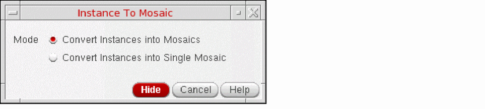

Converting Instances to Mosaics
To convert instances to mosaics:
-
In the layout window, choose Edit – Convert – To Mosaic.
You can choose to select the instances before you start the command. -
Press
F3to open the Instance To Mosaic form.
You can also select Convert To Mosaic from the Instance shortcut menu to open the form.
 -
Choose the Mode.
The default is controlled using the convertEachInstanceIntoMosaic environment variable. -
On the canvas, select the instances to be converted and double-click on the canvas or press
Enter.
The selected instances are converted into one or more mosaics depending on the mode selected.
In the Layout Editor Options form, if the Instance Editing Mode is set to P&R Boundary or Snap Boundary, when converting instances to mosaics, the Delta X and Delta Y is set from the PR boundary or snap boundary, and not from the bounding box.
Related Topics
Converting Circles, Donuts, and Ellipses to Polygons
Return to top